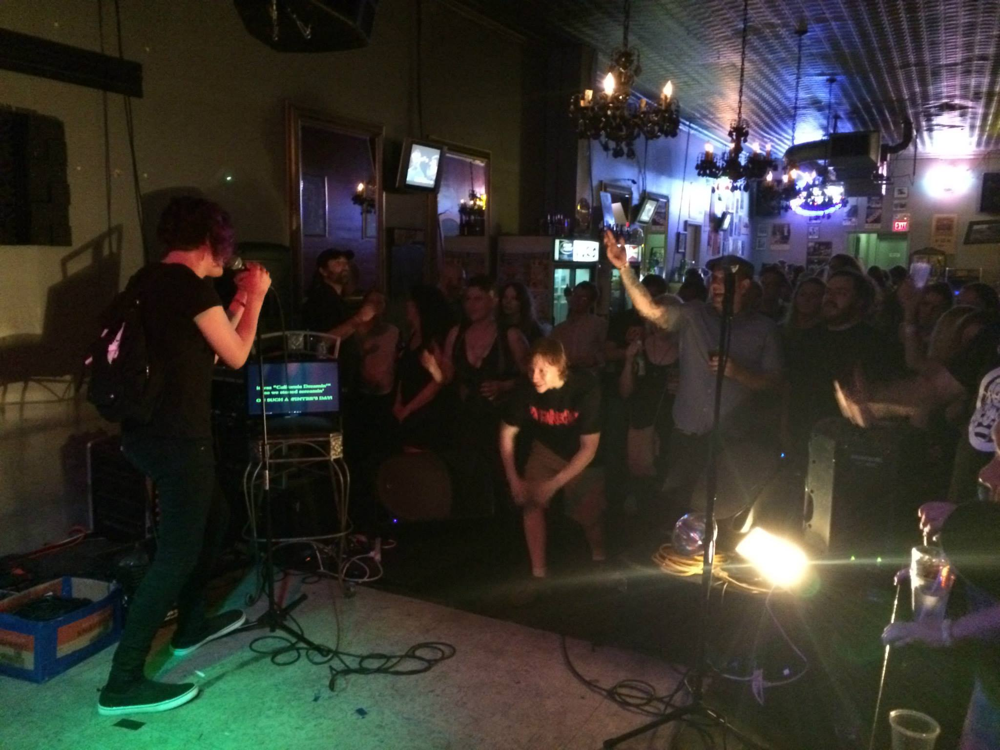

The Lightbulb Club in Fayetteville, AR, one of the great stops on KU’s July Midwest tour.
Missed last month’s email as I was recovering from our fantastic Midwest tour, hope to hit the road again soon. In the meantime, KU picked up a new regular show every Third Saturday at Indian Roller. Come down to South Austin and check it out!
Do you like ’70s and ’80s punk? From Texas? The KU list includes classics from the Big Boys and Dicks, but there’s a lot more great songs from lesser-known bands. Raul’s Royal Foot is a group of veteran Austin musicians who play covers of some of their favorites from the era. I’ve seen them several times and am stoked to play a show together on Sunday, September 13, at The Badlands. Don’t miss it!
More details to come in the next couple weeks, but KU and Drinks Lounge are working with Transmission Events and Fun Fun Fun Fest to give you a chance to win FFF prizes every Sunday in October, building up to a pair of Ultimate Smooth Passes on November 1st! We’ll be adding a lot of new videos for songs from artists playing the fest, you’ll be entered in a drawing for prizes every time you sing one of them, so stay tuned for new song announcements and get ready to sing it LOUD.